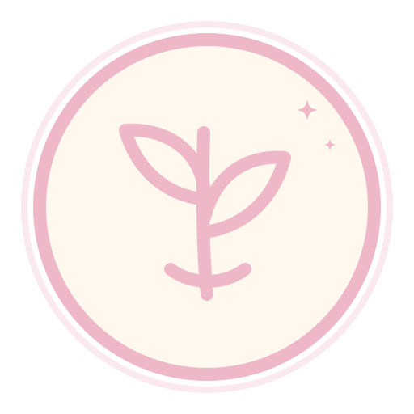

FLOW DÉCOUVERTE
Ton Slow Flow du dimanche
Un réveil en douceur pour prendre soin de toi et commencer la journée autrement.
Chaque dimanche, découvre une nouvelle pratique : méditation, yoga du son, yoga du visage, automassage japonais, mobilité douce, relaxation…
Le contenu change au fil des semaines, mais l’intention reste la même : éveiller tes sensations, ralentir et t’offrir un véritable temps de respiration.
Tous les dimanches · 11 h–12 h · Durée 1h
Découvrir les Flow Découverte